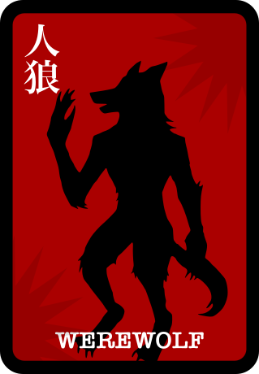
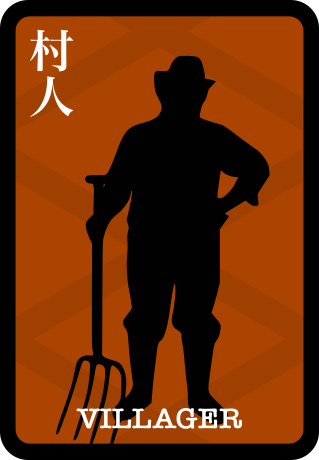
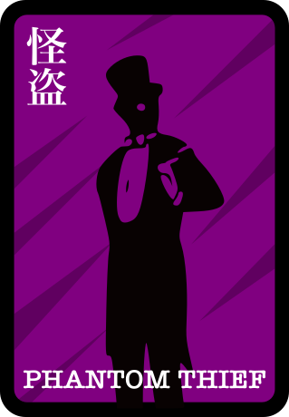

ルール
基本的に公式のワンナイト人狼のルールに全て従う形となっています。
3人-8人で遊べて10-15分程度でワンゲームが終わるような仕組みにしています。
よくある質問
- slackコマンドがtimeoutします
-
slackは2秒間レスがないとtimeoutになるんですが、裏がspreadsheetなので処理が遅くて2秒以上かかる時があるのでそうなります。
特に新規で始める時 - 配られるカードの種類を教えてください
- 次の4種類のどれかが配られます。
   - 場の2枚が人狼で、実際のプレイヤーの中に誰も人狼がいない場合はどうするの？
- その場合は、それぞれプレイヤーが1票ずつ入るようにして「平和村」として成立させてください。
- スタートするとエラーメッセージ「operation_timeout」が出ます
- サーバレスでやってるのでGoogleさんの反応速度によっては、エラーが出る時があります。
30秒待ってもルームの方に音沙汰がない時は再度コマンドを打ってみてください - 占い師や怪盗の時にコマンドを打つと「operation_timeout」が出るんだけど？
- サーバレスでやってるのでGoogleさんの反応速度によっては、エラーが出る時があります。
30秒待ってもルームの方に音沙汰がない時は再度コマンドを打ってみてください - 占いをしたり、怪盗でカードを交換したのにすぐにチャンネルに反映されないんだけど？
- SlackのAPIの回数制限対応や、すぐにログが見えるとバレる可能性があるのでランダムで時間を置いて投稿するようになっています。
使い方
- とりあえずメンバーが3人以上いる部屋を用意します。
- 非公開の部屋の場合は「gamemaster」を招待します。
- メンバーの誰かが「/jinro start」を入力してください。
- あとは指示に従えばできるはずです。
Tech
slackで無料で手軽に具現化する為に以下の技術を使っています。
- GASによるAPIサーバー
- GithubIOによる静的ページ（このサイト）と画像のホスティング